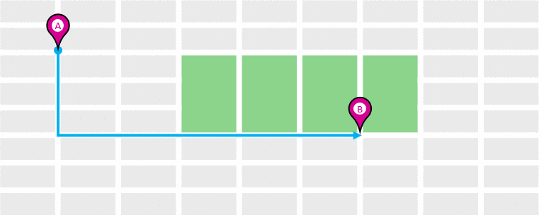
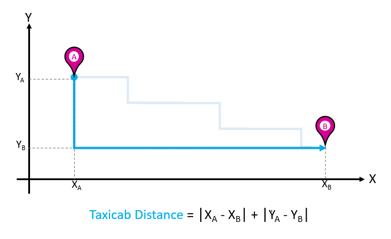

A Model for Proximity: The Voronoi and the Delaunay Diagrams
So how do we model “proximity”? Let us take a quick look at this
description of Predator-Prey
Dynamics.
Plotting the Delaunay and Voronoi Diagrams
So here is an example of a computationally plotted Delaunay
Triangulation and Voronoi Diagram:


How do we plot these diagrams?
We will use this tool:
Geogebra
Download and install this on your laptops. You can also use it in your
browser https://www.geogebra.org/classic?lang=en and download
the Geogebra (.ggb) files that you create.
- Exercise 1: Let us first see Soho with the Voronoi
Diagram
Now let us make such a diagram step by step:
Exercise 2: Let us try with just three points and see what we need
to do to plot the Voronoi Diagram.
Exercise 3: With 4 points: Four Pointer
Voronoi
Exercise 4: Let us now add more points. How do we make a multi-point
Voronoi? We need to make a “list of points” in
Geogebra
Discussion
- Did you see how the Delaunay Triangulation seems to “dislike”
obtuse-angles, and changes the triangulation pattern when a certain
(sum of) angles become more than 180?
- Wasn’t that a very Kandinsky-like thing to do, even for an
algorithm?
- The Delaunay Triangulation gives us a set of triangular elements
that cover our desired surface
- The Voronoi Diagram uses the Delaunay to give us possibly infinite
proximal neighbourhoods.
Other Distances?
Hamming Distances
We have used the simplest and most common of geometric distances between
entities, the Euclidean Distance to model proximity. Are there other
measures of distance?
- How would you measure distance between digital words? For example
\(10010011\) and \(11011011\)?
The Hamming distance between two equal-length strings of symbols
is the number of positions at which the corresponding symbols are
different. The symbols may be letters, bits, or decimal digits, among
other possibilities. For example, the Hamming distance between:
“karolin” and “kathrin” is 3. “karolin” and “kerstin” is 3. “kathrin”
and “kerstin” is 4. 0000 and 1111 is 4. 2173896 and 2233796 is 3.
The Hamming Distance can be calculated using a logical operation known
as “Exclusive-OR” or
“XOR”.
Taxicab Distances
And if a man hatta live in New York?


We will use the Euclidean and maybe other concepts of distance when we
get into our Machine Learning models!
So where are all these Proximities used?
Proximities in the GPS System
The GPS system is all about wanting to know if one is proximate to a
desired landmark! But how does it work?
Based on a measurement of two proximity scores, both electronic. One in
Space and one in Time. Oooh, cryptic, isn’t it? Here is how it works:
Users receive GPS transmissions from more than one satellite (to
improve accuracy; more later).
Each Satellite is given a unique digital signature code, called
its Coarse/Acquisition, or C/A Code.
This code is a digital one-zero based sequence, which repeats after
a week.
The code ones and zeroes are called chips; the chips are output
by each satellite at a rate of 1.023 MHz. ( i.e. a little faster
than a million chips per second)
All satellites use an on-board time clock. All satellites are
synchronized and it is the same time on all satellites, regardless
of where they are in the sky.
A User Receiver cannot understand what the satellite is saying,
UNLESS it removes/wipes off the signature used by the satellite. So
think of this in proximity terms: the user needs to know the
Signature Sequence and also be in sync aligned with it, chip for
chip.
One the signature is removed, what remains is what the satellite is
saying.
GPS#5 उवाच:
- “It is 4 PM on my onboard clock”;
- “The ionosphere is doing weird things so please include that
weirdness in your position computation etc”;
- Other stuff, called the satellite ephimeris (which we may
discuss in class)
But Houston, we have a problem,
but right here on the ground, mercifully. The problem is, wait for it,
the Speed of Light. And it is a good problem to have.
When you detect say GPS#5 saying it is 4 PM, that signal came from
GPS#5 to you at the speed of light, so by the time it arrives,
the time on the satellite is already 4PM + 150 microseconds.
Since different GPS satellites we can see are at different
ranges, we receive different times from 5 different GPS
satellites.
Then we can set up a set of linear matrix equations in these
variables:
- “Received Time” from each satellite (Pseudo-Range)
- Long and Lat (called a Position Fix);
- Absolute Time (Time Fix)
Which we solve to obtain both Position Fix and Time Fix.
So in summary, the user needs to calculate two proximities:
A C/A code proximity, measured by the Hamming Distance between
the received code and a locally generated C/A code. Which code to
generate locally? We don’t really know, so we generate ~ all.
Huh. And select that C/A code to wipe off which shows good proximity
with received C/A code. (This is called, in telecom language, a
Code Matched Filter and Rake Receiver. Ask me what this
looks like, at your peril.)
A Time Proximity, by correcting its own local clock to match the
satellite clocks, accurately. (This is called, in telecom language
again, a Delay-Lock Loop. Peril again.)
Code Proximity Measurement

Code Proximity Measure
In the @fig-code-autocorr above, the red curve shows the Hamming Distance between a received C/A code, and its locally generated copy. Only when the proximity between them is within one-chip does the measure have any sensible amplitude. (This is called Autocorrelation.)
The blue curve show Hamming Distance proximity between a received C/A code and any other C/A code. At no overlap position do these dissimilar codes have a useful proximity measure. (This is known as Cross-Correlation).
C/A codes are designed to have that spike-like autocorrelation, and that fuzz like cross-correlation to aid in proximity-based synchronization and code wipe-off.
A Brief Foray into Cryptography
In the Sherlock Holmes story,The Adventure of the Dancing
Men,
a criminal known the one of the characters communicates with her using a
childish/child-like drawing which looks like this:
 In this message, each character is a visual
representation, or a substution for, a letter from the alphabet. The
characters with flags are the first letter of a new word. The message is
translated in the story as “Am here, Abe Slaney”.
In this message, each character is a visual
representation, or a substution for, a letter from the alphabet. The
characters with flags are the first letter of a new word. The message is
translated in the story as “Am here, Abe Slaney”.
The entire code alphabet is shown in the figure below:

This code is a good example of a Substitution
Cipher with
non-text substition. See
https://www.boxentriq.com/code-breaking/dancing-men-cipher and
https://www.dcode.fr/dancing-men-cipher for examples where you
can encode and decode your own text, and send them to friends.
üòé üòº
The intent behind any substitution cipher is to be create distance
from the original message, or characters. The algorithms to encode and
decode uses this idea of distance to perform their operations and
are entirely reversible.
Painting with Proximity/Distance
Well, all right, all right, tech is fine. Can we use the idea of
Proximity to create art? Well, we are not Kandinsky, but we can try.
Here goes:
- Fire up the Strava app, or equivalent, on your phones.
- Walk out into the college campus, preferably under open sky.
- With the app on, try to create a figure like
this
- Share the image with your friend!
Here are some domains and purposes within them, that use the idea of
Proximity, and use Voronoi/Delaunay diagrams in their work. From
David Eppstein’s Geometry in Action webpage at UC, Arvind
Irvine :
- Anthropology and Archeology – Identify the parts of a region under
the influence of different neolithic clans, chiefdoms, ceremonial
centers, or hill forts.
- Astronomy – Identify clusters of stars and clusters of galaxies
(Here we saw what may be the earliest picture of a Voronoi diagram,
drawn by Descartes in 1644, where the regions described the regions
of gravitational influence of the sun and other stars.)
- Biology, Ecology, Forestry – Model and analyze plant competition
(“Area potentially available to a tree”, “Plant polygons”)
- Cartography – Piece together satellite photographs into large
“mosaic” maps
- Crystallography and Chemistry – Study chemical properties of
metallic sodium (“Wigner-Seitz regions”); Modelling alloy structures
as sphere packings (“Domain of an atom”)
- Finite Element Analysis – Generating finite element meshes which
avoid small angles
- Geography – Analyzing patterns of urban settlements. See also
Christopher Alexander’s Pattern
Language
- Geology – Estimation of ore reserves in a deposit using
information obtained from bore holes; modelling crack patterns in
basalt due to contraction on cooling
- Geometric Modeling – Finding “good” triangulations of 3D
surfaces
- Marketing – Model market of metropolitan areas; market area
extending down to individual retail stores
- Mathematics – Study of positive definite quadratic forms
(“Dirichlet tesselation”, “Voronoi diagram”)
- Metallurgy – Modelling “grain growth” in metal films
- Meteorology – Estimate regional rainfall averages, given data at
discrete rain gauges (“Thiessen polygons”)
- Pattern Recognition – Find simple descriptors for shapes that
extract 1D characterizations from 2D shapes (“Medial axis” or
“skeleton” of a contour)
- Physiology – Analysis of capillary distribution in cross-sections
of muscle tissue to compute oxygen transport (“Capillary domains”)
- Robotics/ Autonomous Vehicles– Path planning in the presence of
obstacles
- Statistics and Data Analysis – Analyze statistical clustering
(“Natural neighbors” interpolation)
- Zoology – Model and analyze the territories of animals